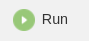
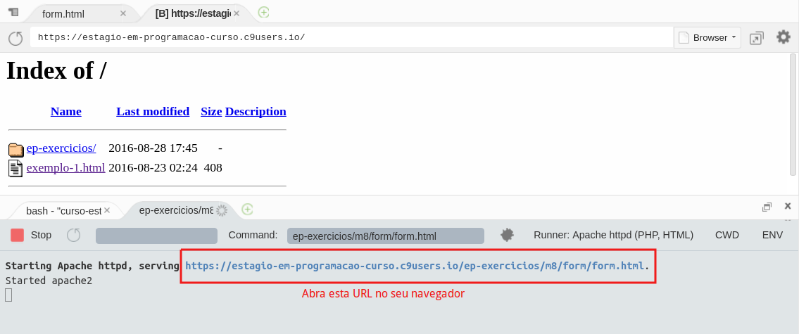

Caso ainda não exista, crie o diretório ~/workspace/ep-exercicios/m8 para a resolução dos exercícios deste módulo.
Obtenha o diretório com os arquivos dos exercícios executando os comando abaixo:
cp ~/.ep/cli/public/supplies/m08/form.zip ~/workspace/ep-exercicios/m8/
cd ~/workspace/ep-exercicios/m8/
# Cria um novo diretório chamado "form" com os arquivos dos exercícios.
unzip form.zip -d form
Abra o arquivo form.html no editor de texto:
c9 ~/workspace/ep-exercicios/m8/form/form.html
Clique no botão Run na interface do Cloud 9 (mostrado abaixo) para iniciar um servidor Web que será usado para acessar a página HTML do nosso exercício fora do Cloud 9.

Observe o painel que foi aberto no Cloud 9 quando você clicou no botão Run (mostrado abaixo). Copie a URL que foi impressa no painel e abra essa URL no seu navegador. Nós recomendamos que você use o Google Chrome, porque esse foi o navegador usado nos vídeos, e porque o corretor foi testado neste navegador.

Abra o Developer Tools clicando em uma área qualquer da página do formulário e, em seguida, na opção Inspecionar (ou Inspect, dependendo do idioma do seu navegador). Outra forma de abrir o Developer Tools é usando o atalho Ctrl + Shift + i (Windows ou Linux).
Ao longo dos exercícios descritos no próximo item, você precisará alterar os arquivos que recebeu (form.html, form.css e form.js) de acordo com o que o exercício pede que seja feito.
Sempre que você alterar algum destes arquivos, não se esqueça de salvá-lo antes de recarregar a página no navegador.
Atenção: não modifique o arquivo form-test.js, pois ele é usado para a correção.
Se você não preencher nenhum campo do formulário e clicar no botão Enviar, verá que são exibidas diversas mensagens de erro (mensagens de validação). Elas estão em azul e, neste exercício, você deve alterar o CSS da página (arquivo form.css) para que as mensagens de erros de validação apareça em vermelho.
<p> em negritoAlterar o CSS para que todos os elementos de parágrafo (<p>) apareçam em
negrito. Um bom lugar para começar é consultando a lista de propriedades relacionadas a fontes, listadas
aqui (olhe a lista Properties).
Atualmente, a única verificação associada ao campo birthday é a validação de
presença (isto é, o campo é considerado inválido se estiver em branco), mas também é necessário verificar se o valor informado pelo
usuário é válido.
O valor será considerado válido se for uma string que obedece ao formato
clássico dd/mm/yyyy. Por exemplo, 25/04/1979 é uma data válida. Já os valores 25-04-1979 ou 25041979 não são válidos e não deveriam ser aceitos pelo validador, que está escrito em JavaScript.
Para completar este exercício, veja a função validateBirthday do arquivo form.js.
Também é uma boa ideia olhar outros métodos que fazem validação e que já estão
implementados, para ter uma ideia de como implementar.
Atualmente, a única verificação associada ao campo password-confirmation é a validação de
presença, mas também é necessário verificar se o valor informado é igual ao valor
informado no campo password.
Para completar este item, veja a função validatePasswordConfirmation do arquivo form.js.
Atualmente, quando o usuário clica no botão "Limpar", o formulário inteiro é apagado (faça o teste para verificar!). Este é, de fato, o comportamento esperado, mas queremos exibir uma mensagem de confirmação antes. Dessa forma, se o usuário clicar no botão sem querer, não perderá todos os dados que já preencheu até o momento.
Altere a função cleanUp do JavaScript, que é responsável por esconder as mensagens de erro do formulário, para implementar este
comportamento.
Você deve usar o método window.confirm()(documentação aqui) para
exibir a mensagem "Tem certeza que deseja apagar o formulário?".
Se o usuário clicar em "Cancelar", a ação deve ser cancelada, ou seja, o formulário deve permanecer inalterado.
Observação: Note que apagar os campos do formulário é um comportamento padrão do evento click de elementos <input> que tem o atributo type="reset". Ou seja, esse comportamento nem aparece na função cleanUp, mas você precisará impedi-lo caso o usuário clique em "Cancelar".
Implemente o seguinte comportamento: sempre que um checkbox for selecionado, o rótulo associado a ele ("Algoritmos", "Hardware", etc) deve ficar em itálico. Se o usuário cancelar a seleção, o rótulo deve voltar ao normal.
Algumas dicas:
.selected, que deixa um texto em itálico. A ideia é que, quando um elemento qualquer do HTML tiver essa classe, vai ficar com o seu conteúdo em itálico. Assim, o JavaScript só precisa se encarregar de adicionar/remover esta classe ao elemento apropriado. Esta implementação é parecida com a forma que está sendo usada para mostrar/esconder as mensagens de erro.elem é um objeto que representa um checkbox, o atributo elem.checked
pode ser usado para descobrir se o checkbox está selecionado.elem é um objeto do DOM, elem.parentElement pode ser usado para obter o elemento-pai
deste objeto.change é disparado para aquele elemento.Altere o HTML para adicionar um novo campo, "Telefone", logo abaixo do campo "Data de nascimento".
Em seguida, altere o JavaScript para adicionar validações de presença e de formato neste novo campo. Para um telefone ser válido, ele deve conter apenas dígitos, no mínimo 10 (DDD + 8 dígitos) e no máximo 11 (DDD + 9 dígitos), sem espaços ou sinais de pontuação. Por exemplo, um telefone válido seria "11999926644", enquanto "(11) 99992-6644" seria inválido.
phone para o telefone. Por exemplo, a classe da div deve ser group-for-phone, o <input> deve ter atributo name="phone", etc.birthday) para ter ideias.Use o ep-cli para corrigir a sua solução:
ep-cli corrigir --dir ~/workspace/ep-exercicios/m8/form 8.2
Use o ep-cli para enviar a sua resolução:
ep-cli enviar 8.2
Atualização do seu GitHub: caso ainda não possua, crie um repositório público no Github chamado studies. Adicione uma pasta chamada front-end dentro dele e, nesta pasta, adicione o diretório do projeto (diretório form).